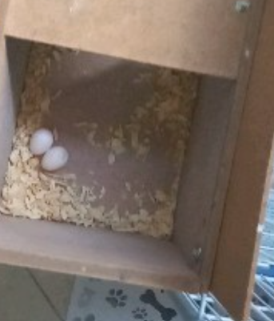
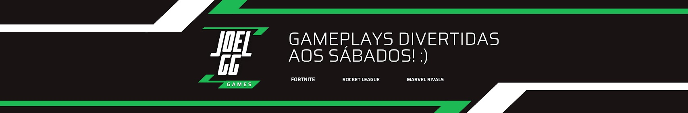

Sobre mim
Opa! Meu nome é Joel Gracek! Tenho 15 anos e moro na Vila Moraes, um bairro próximo do Sacomã lá na zona sul.
Sou cristão e gosto muito de jogar jogos dos mais variados, assistir filmes, ler livros e passear com a minha família.


Curiosidades sobre mim
Eu tenho 4 calopsitas: os papais Billy e Bella e os filhotes Nino e Nina.


Eu já tive um canal de jogos no YouTube. Com ele, aprendi muito sobre edição de vídeo.

Lugares que visitei

Santos - SP

Balneário Camboriú - SC

Beto Carrero World
Lugares que quero visitar

Foz do Iguaçu - PR

Suíça